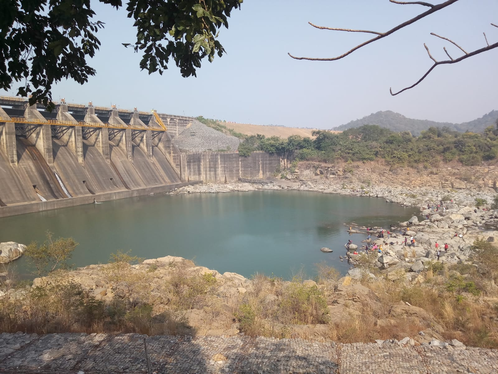

Maithon
As soon as, your ride enters the premises of the dam, your mind will be overwhelmed with joy watching the blue waters of the reservoir. Motor as well as speed boats are available for taking an adventurous ride on the blue waters of the reservoir. One can even boat-ride to islands inside the reservoir. It feels like you are somewhere in the middle of an ocean and somewhere far you can see the hills in the coast. There are a lot of small hills near the dam with temples on the top of it, which also adds another beauty to the background. In winters, clear and blue sky with clear and blue water, looks so fabulous that you can spent hours sitting by the reservoir and enjoying the marvellous setting.
Located around 40 kms from Asansol, the dam is constructed on the Barakar River. One of the biggest reservoir in eastern India. During winter, this place is famous for its picnic spots, mind-blowing sceneries and numerous other adventurous activities. I have always been somewhat excited towards the road journeys and jouney to this place from Asansol is another majestic one.
At the other side of the dam, a small pool of water is present and one can climb down on the river bed full of rocks to have bath or to enjoy the dam closely.